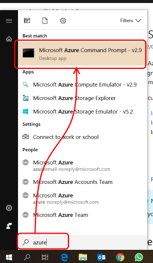
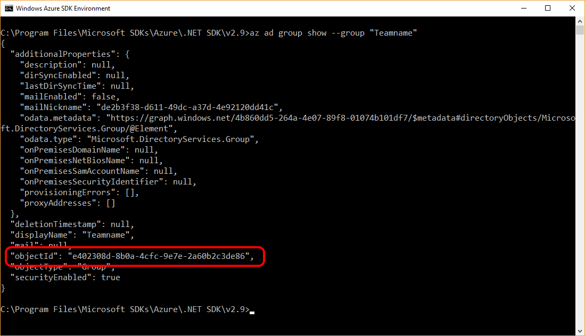

This step by step guide describes the steps for automatically creating a resource group and assigning a security group by using the Azure CLI 2.0. If you want to use PowerShell, you'll need to convert all the steps to their PowerShell equivalent.

az login and follow the instructionsaz ad group show --group "Teamname" and make note of the objectID in the result. 
CreateResourceGroup_Fixed.cmdAdd the following code to create a resource group:
bash
REM create resource group
call az group create --name "RG-Playground-Teamname" --location "West Europe"
Then add the following lines to add the security group "Teamname" as contributor
bash
REM assign security group
call az role assignment create --role Contributor --assignee-object-id "<objectID of group>" --resource-group "RG-Playground-Teamname"
Replace <objectID of group> with the objectID that you retrieved in one of the previous steps, using the az ad group show command.
az logincd <path where you saved your script>CreateResourceGroup_Fixed.bat